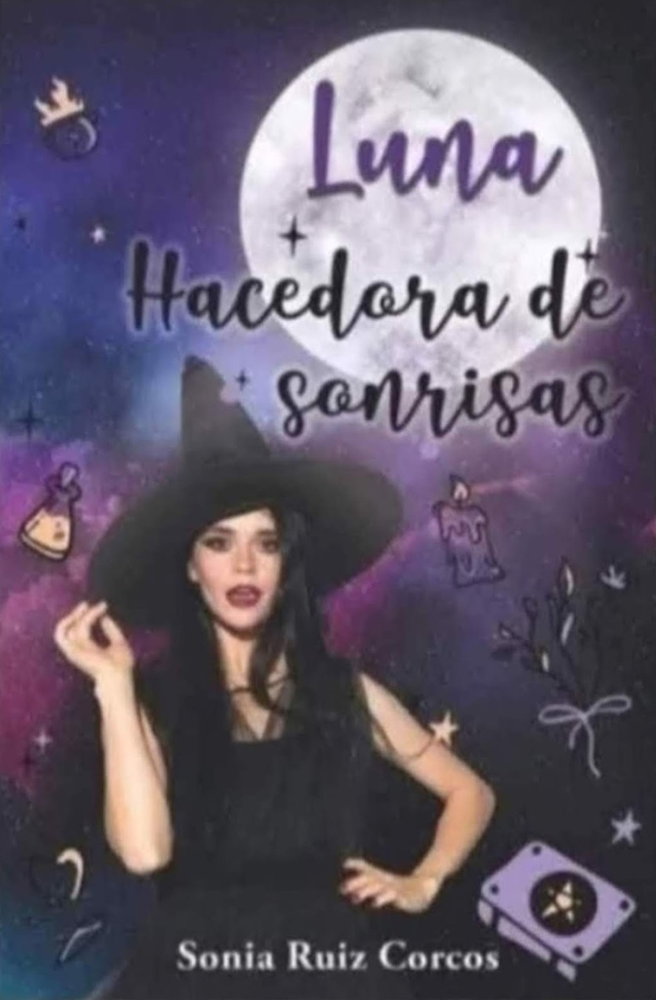
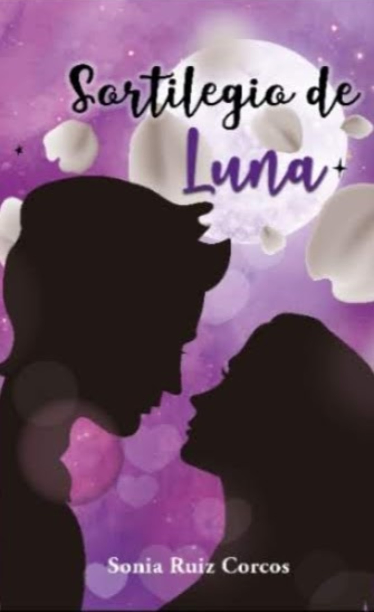
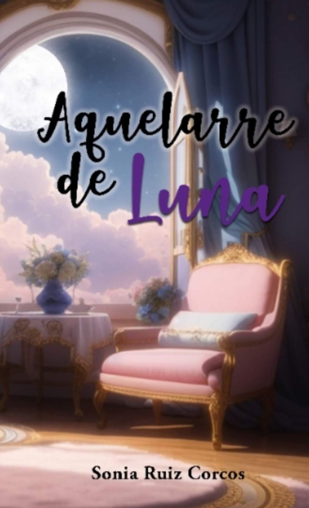
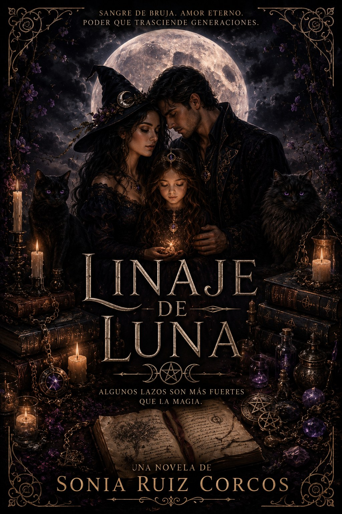
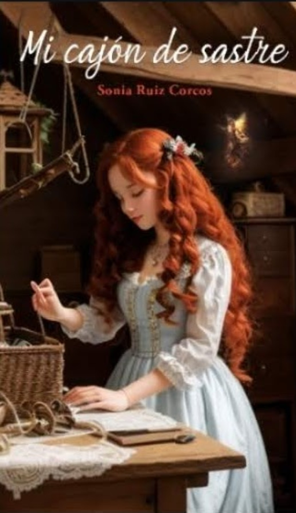
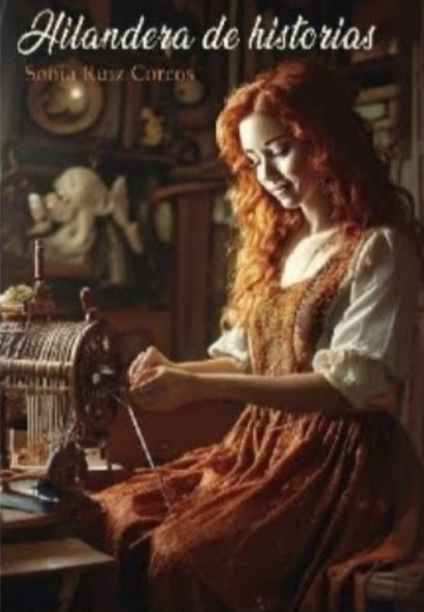
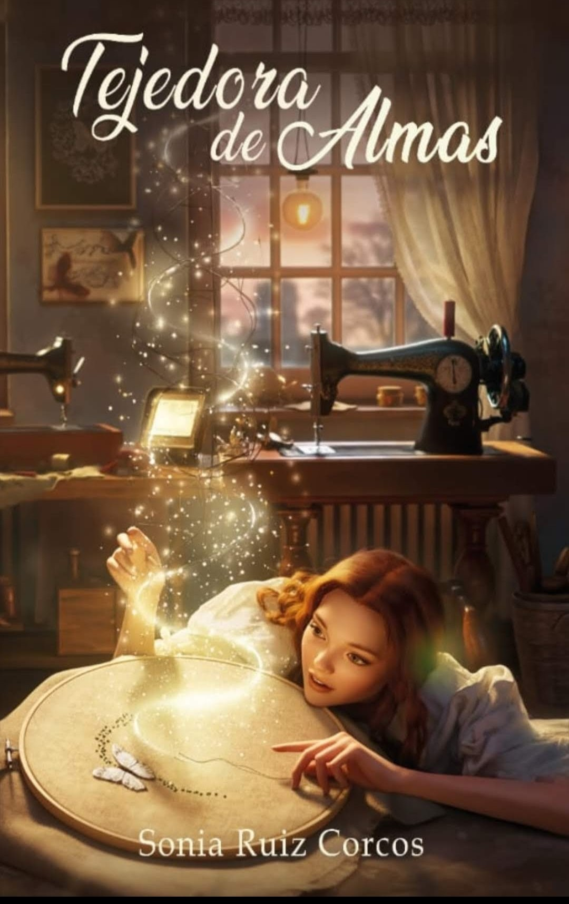

Una entrañable historia de crecimiento personal, con rituales sencillos para manifestar la magia que hay en ti.
Luna es una adolescente que acaba de descubrir que es bruja, como el largo linaje de su familia. Junto a su abuela Leo y el aquelarre aprende hechizos para ayudar a los demás, crece como mujer y como bruja, y descubre el amor.
A lo largo de la saga, Luna madura al ritmo de la vida: el Universo a veces da y a veces quita, pero ella siempre puede contar con su aquelarre, que la arropa en cada etapa. Del diario de la joven Leovigilda aprende que después de la tormenta llega la calma y que lo que es para nosotros llega en el momento exacto.
Brujas, linaje y magia hecha siempre desde el amor y la entrega a los demás.
La novela que abre la saga y la ópera prima de la autora.
Luna es adolescente y acaba de descubrir que es bruja, como el largo linaje familiar. Junto a su abuela Leo y el aquelarre, aprenderá hechizos de ayuda a los demás y conocerá el amor.
Una entrañable historia de crecimiento personal con rituales sencillos y efectivos para manifestar la magia que hay en ti. Existe además una reedición revisada de esta primera novela.






Escritora y Diplomada en Magisterio por la Universidad de Oviedo. Nació en Oviedo el 21 de julio de 1979 y ha vivido toda su vida en Avilés, entre sus libros y el Cantábrico. Empezó a escribir siendo una niña, llenando cuadernos de historias con personajes increíbles y lugares de ensueño.
Tras obtener un premio, como tercer finalista, en el II Concurso Internacional de Relatos Románticos de Ediciones Embrujo (2022) para países de habla hispana, se dedicó de manera más profesional a cumplir su sueño. Las brujas y la magia le apasionan, y de ahí nació Luna, la brujita que aprende magia de su abuela. Para crearla realizó numerosas entrevistas a personas mayores, para conocer las tradiciones populares y darles voz antes de que se perdieran en el olvido.
Ha publicado siete libros en solitario —novelas y relatos— traducidos a varios idiomas, más una reedición de su ópera prima, Luna, hacedora de sonrisas. Cuenta además con doce colaboraciones como coautora en libros de relato corto. Cuando no escribe, lee; y cuando no lee, disfruta de la costa rodeada de buena compañía y una historia nueva rondando por la cabeza.
Comparte su día a día, sus novedades y el universo de Luna. Si quieres tus libros dedicados, este es el sitio para escribirle.